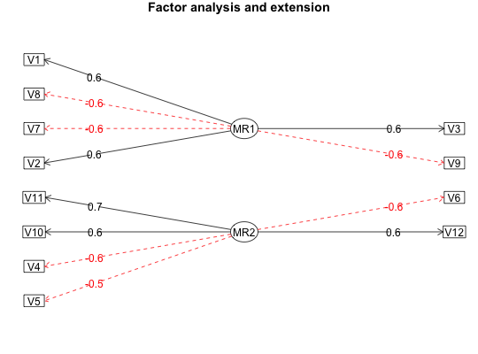

Dwyer (1937) introduced a method for finding factor loadings for variables not included in the original analysis. This is basically finding the unattenuated correlation of the extension variables with the factor scores. An alternative, which does not correct for factor reliability was proposed by Gorsuch (1997). Both options are an application of exploratory factor analysis with extensions to new variables.
fa.extension(Roe,fo,correct=TRUE) fa.extend(r,nfactors=1,ov=NULL,ev=NULL,n.obs = NA, np.obs=NULL, correct=TRUE,rotate="oblimin",SMC=TRUE, warnings=TRUE, fm="minres",alpha=.1,omega=FALSE, ...)
| Roe | The correlations of the original variables with the extended variables |
|---|---|
| fo | The output from the |
| correct | correct=TRUE produces Dwyer's solution, correct=FALSE produces Gorsuch's solution |
| r | A correlation or data matrix with all of the variables to be analyzed by fa.extend |
| ov | The original variables to factor |
| ev | The extension variables |
| nfactors | Number of factors to extract, default is 1 |
| n.obs | Number of observations used to find the correlation matrix if using a correlation matrix. Used for finding the goodness of fit statistics. Must be specified if using a correlaton matrix and finding confidence intervals. |
| np.obs | Pairwise number of observations. Required if using fm="minchi", suggested in other cases to estimate the empirical goodness of fit. |
| rotate | "none", "varimax", "quartimax", "bentlerT", "geominT" and "bifactor" are orthogonal rotations. "promax", "oblimin", "simplimax", "bentlerQ, "geominQ" and "biquartimin" and "cluster" are possible rotations or transformations of the solution. The default is to do a oblimin transformation, although versions prior to 2009 defaulted to varimax. |
| SMC | Use squared multiple correlations (SMC=TRUE) or use 1 as initial communality estimate. Try using 1 if imaginary eigen values are reported. If SMC is a vector of length the number of variables, then these values are used as starting values in the case of fm='pa'. |
| warnings | warnings=TRUE => warn if number of factors is too many |
| fm | factoring method fm="minres" will do a minimum residual (OLS), fm="wls" will do a weighted least squares (WLS) solution, fm="gls" does a generalized weighted least squares (GLS), fm="pa" will do the principal factor solution, fm="ml" will do a maximum likelihood factor analysis. fm="minchi" will minimize the sample size weighted chi square when treating pairwise correlations with different number of subjects per pair. |
| alpha | alpha level for the confidence intervals for RMSEA |
| omega | Do the extension analysis for an omega type analysis |
| ... | additional parameters, specifically, keys may be passed if using the target rotation, or delta if using geominQ, or whether to normalize if using Varimax |
It is sometimes the case that factors are derived from a set of variables (the Fo factor loadings) and we want to see what the loadings of an extended set of variables (Fe) would be. Given the original correlation matrix Ro and the correlation of these original variables with the extension variables of Roe, it is a straight forward calculation to find the loadings Fe of the extended variables on the original factors. This technique was developed by Dwyer (1937) for the case of adding new variables to a factor analysis without doing all the work over again. But, as discussed by Horn (1973) factor extension is also appropriate when one does not want to include the extension variables in the original factor analysis, but does want to see what the loadings would be anyway.
This could be done by estimating the factor scores and then finding the covariances of the extension variables with the factor scores. But if the original data are not available, but just the covariance or correlation matrix is, then the use of fa.extension is most appropriate.
The factor analysis results from either fa or omega functions applied to the original correlation matrix is extended to the extended variables given the correlations (Roe) of the extended variables with the original variables.
fa.extension assumes that the original factor solution was found by the fa function.
For a very nice discussion of the relationship between factor scores, correlation matrices, and the factor loadings in a factor extension, see Horn (1973).
The fa.extend function may be thought of as a "seeded" factor analysis. That is, the variables in the original set are factored, this solution is then extended to the extension set, and the resulting output is presented as if both the original and extended variables were factored together. This may also be done for an omega analysis.
The example of codefa.extend compares the extended solution to a direct solution of all of the variables using factor.congruence.
Factor Loadings of the exended variables on the original factors
Paul S. Dwyer (1937) The determination of the factor loadings of a given test from the known factor loadings of other tests. Psychometrika, 3, 173-178
Gorsuch, Richard L. (1997) New procedure for extension analysis in exploratory factor analysis, Educational and Psychological Measurement, 57, 725-740 Horn, John L. (1973) On extension analysis and its relation to correlations between variables and factor scores. Multivariate Behavioral Research, 8, (4), 477-489.
See Also as fa, principal, Dwyer
Ro <- Dwyer[1:7,1:7] Roe <- Dwyer[1:7,8] fo <- fa(Ro,2,rotate="none") fe <- fa.extension(Roe,fo) #an example from simulated data set.seed(42) d <- sim.item(12) #two orthogonal factors R <- cor(d) Ro <- R[c(1,2,4,5,7,8,10,11),c(1,2,4,5,7,8,10,11)] Roe <- R[c(1,2,4,5,7,8,10,11),c(3,6,9,12)] fo <- fa(Ro,2) fe <- fa.extension(Roe,fo) fa.diagram(fo,fe=fe)#create two correlated factors fx <- matrix(c(.9,.8,.7,.85,.75,.65,rep(0,12),.9,.8,.7,.85,.75,.65),ncol=2) Phi <- matrix(c(1,.6,.6,1),2) sim.data <- sim.structure(fx,Phi,n=1000,raw=TRUE) R <- cor(sim.data$observed) Ro <- R[c(1,2,4,5,7,8,10,11),c(1,2,4,5,7,8,10,11)] Roe <- R[c(1,2,4,5,7,8,10,11),c(3,6,9,12)] fo <- fa(Ro,2) fe <- fa.extension(Roe,fo) fa.diagram(fo,fe=fe)#now show how fa.extend works with the same data set #note that we have to make sure that the variables are in the order to do the factor congruence fe2 <- fa.extend(R,2,ov=c(1,2,4,5,7,8,10,11),ev=c(3,6,9,12),n.obs=1000) fa.diagram(fe2,main="factor analysis with extension variables")#> MR1 MR2 #> MR1 1.00 0 #> MR2 0.01 1summary(fe2) #an example of extending an omega analysis fload <- matrix(c(c(c(.9,.8,.7,.6),rep(0,20)),c(c(.9,.8,.7,.6),rep(0,20)),c(c(.9,.8,.7,.6), rep(0,20)),c(c(c(.9,.8,.7,.6),rep(0,20)),c(.9,.8,.7,.6))),ncol=5) gload <- matrix(rep(.7,5)) five.factor <- sim.hierarchical(gload,fload,500,TRUE) #create sample data set ss <- c(1,2,3,5,6,7,9,10,11,13,14,15,17,18,19) Ro <- cor(five.factor$observed[,ss]) Re <- cor(five.factor$observed[,ss],five.factor$observed[,-ss]) om5 <-omega(Ro,5) #the omega analysisfa.extension(Re,om5) #the extension analysis#> #> Call: fa.extension(Roe = Re, fo = om5) #> Standardized loadings (pattern matrix) based upon correlation matrix #> g F1* F2* F3* F4* F5* h2 u2 #> V4 0.38 0.07 0.02 0.34 0.03 -0.01 0.27 0.73 #> V8 0.43 0.00 0.07 -0.03 0.36 0.05 0.32 0.68 #> V12 0.38 0.41 0.04 -0.02 0.01 0.03 0.31 0.69 #> V16 0.39 -0.02 -0.01 0.02 -0.01 0.36 0.28 0.72 #> V20 0.38 -0.03 0.34 0.07 0.01 0.01 0.27 0.73 #> #> g F1* F2* F3* F4* F5* #> SS loadings 0.77 0.17 0.12 0.12 0.13 0.13 #> Proportion Var 0.15 0.03 0.02 0.02 0.03 0.03 #> Cumulative Var 0.15 0.19 0.21 0.24 0.26 0.29 #> Proportion Explained 0.53 0.12 0.09 0.09 0.09 0.09 #> Cumulative Proportion 0.53 0.65 0.73 0.82 0.91 1.00